作者：创世魂
● 概述
本组件虽然属于按钮组件，但是并未继承“按钮基础类”，只继承了“窗口组件”类。
● 被单击(事件)
帮助文档如下图：
当超级按钮被鼠标左键点击后将触发本事件。
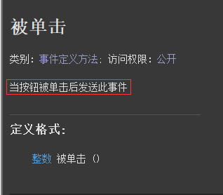
代码编写如下图：
添加本事件后，通过“来源对象”参数可确定是哪个按钮点击。
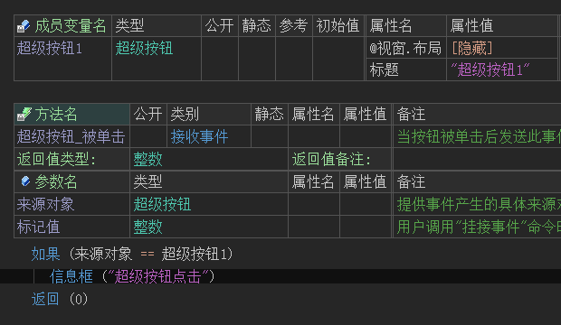
运行效果如下图：
最终点击后将弹出信息框。
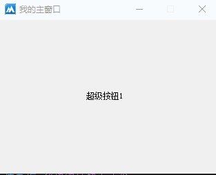
● 按钮风格(写)
帮助文档如下图：
通过本属性可切换超级按钮风格，调用方式：“超级按钮风格.XXX”
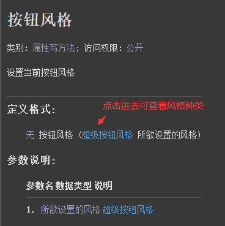
代码编写如下图：
按钮1点击后，设置本属性值为“超级按钮风格.XP风格”。
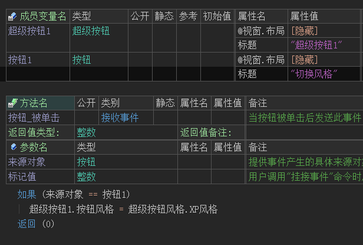
运行效果如下图：
可看到按钮点击前后，超级按钮的风格发生了变化。
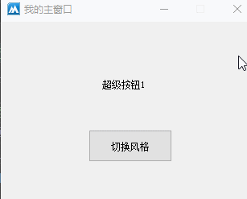
● 选择框方式(写)
帮助文档如下图：
本属性值设置为真，可以将超级按钮设置为选择框模式。
设置后超级按钮点击后，会一直处于按压状态，在此点击恢复正常状态。
注意：本属性只能在组件属性栏中设置。
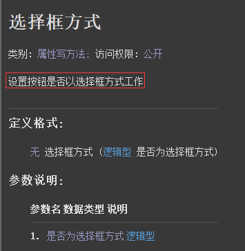
代码编写如下图：
在超级按钮的组件属性栏中设置本属性为真。
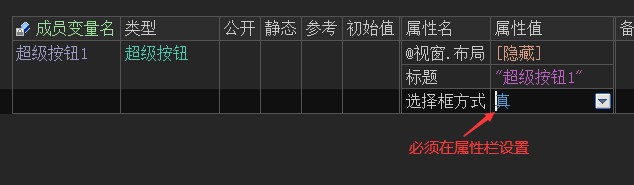
运行效果如下图：
左图：本属性值为假的效果。
右图：本属性值为真的效果。
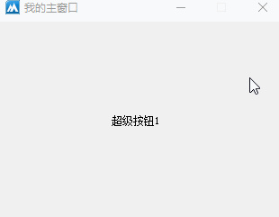
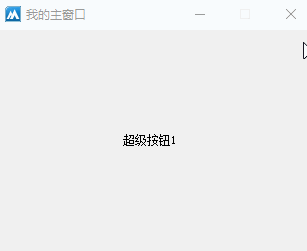
● 选中(写)
帮助文档如下图：
通过本属性可设置当前超级按钮是否被选中。
注意：必须将“选择框方式=真”本属性才有效。
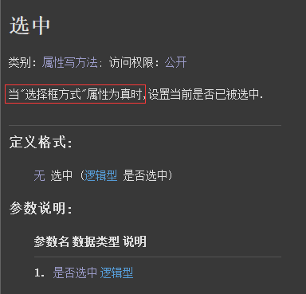
代码编写如下图：
1、首先将“选择框方式”设置为真。
2、按钮点击后切换选中状态。
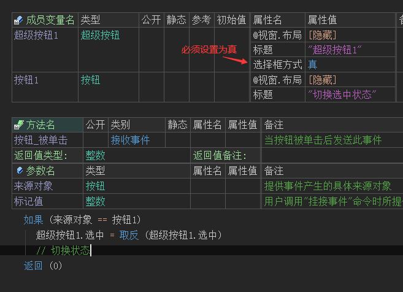
运行效果如下图：
最终可看到按钮点击后，超级按钮可以进行选中状态的切换。
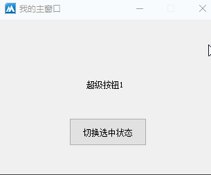
●对齐方式(写)
帮助文档如下图：
通过本属性可设置超级按钮图文排版模式，调用方式：“超级按钮对齐方式.XX”.
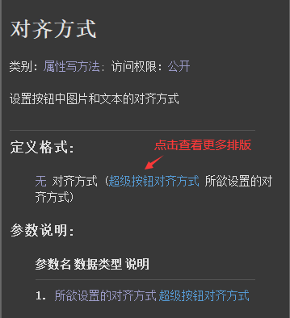
代码编写如下图：
1、首先给超级按钮设置一个图片。
2、按钮点击后设置本属性为“超级按钮对齐方式.图上文下”。
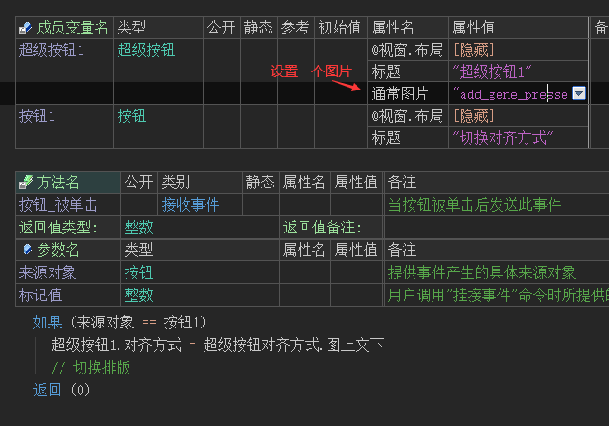
运行效果如下图：
可看到当按钮点击后，超级按钮的图文排版将发生变化。
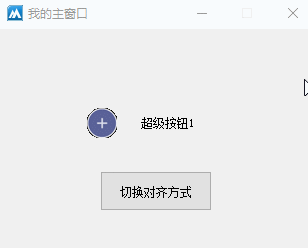
● 绘制边框(写)
帮助文档如下图：
本属性设置为真，可让超级按钮出现边框效果，为假则取消边框。
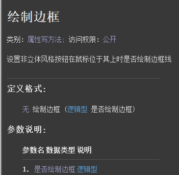
代码编写如下图：
分别在两个超级按钮的属性栏设置不同的属性值。
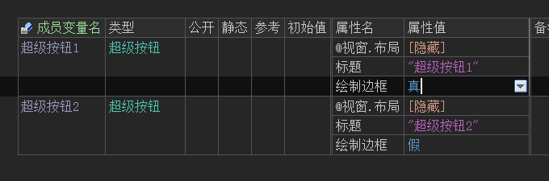
运行效果如下图：
最终可看到超级按钮1存在边框，超级按钮2不存在边框。
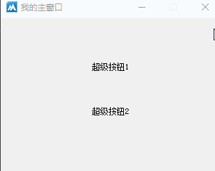
● 绘制焦点(写)
帮助文档如下图：
本属性设置为真，当超级按钮获得焦点后，将会出现一个边框虚线。
本属性值默认为假，不会出现虚线效果。
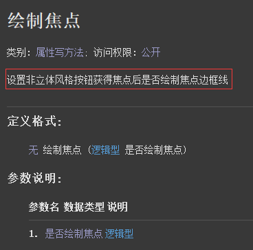
代码编写如下图：
分别给两个超级按钮设置不同的属性值。
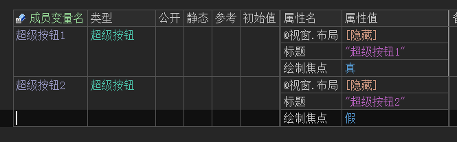
运行效果如下图：
最终可看到超级按钮1获得焦点后，边框会出现虚线效果。
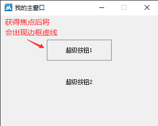
● 通常图片(写)
“通常图片”帮助文档如下图：
通过本属性可给超级按钮设置一个图片，当鼠标位于超级按钮范围外时显示此图片。
如果想取消图片显示，设置本属性值为“空资源.空位图”即可。
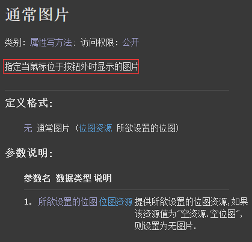
“点燃图片”帮助文档如下图：
当鼠标经过超级按钮时显示此图片。
如果想取消图片显示，设置本属性值为“空资源.空位图”即可。
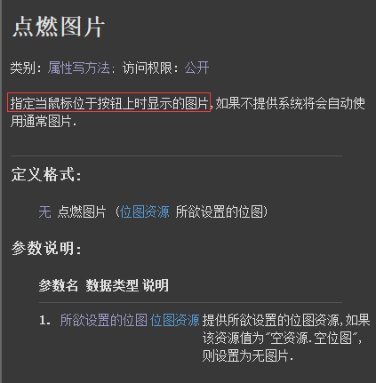
代码编写如下图：
在组件属性栏分别设置以上两个属性，并引入两个不同的图片。
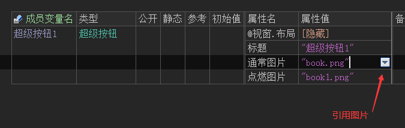
运行效果如下图：
最终可看到当鼠标经过和离开超级按钮时，显示的图片不一样。
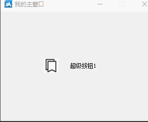
● 禁止图片(写)
帮助文档如下图：
顾名思义，当超级按钮被禁止操作后将显示本图片。
注意：想要使用本属性必须设置“通常图片”。
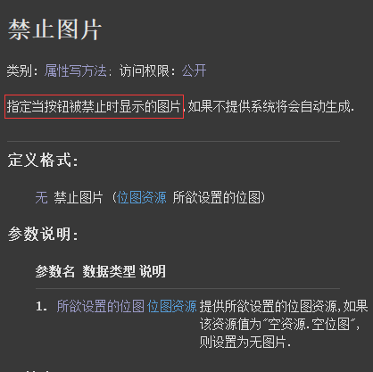
代码编写如下图：
1、设置“通常图片”和“禁止图片”属性。
2、按钮点击后禁止超级按钮。
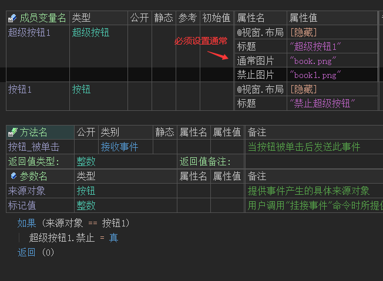
运行效果如下图：
最终当按钮点击后，超级按钮的图片将会被改变，此时超级按钮也被禁止操作。
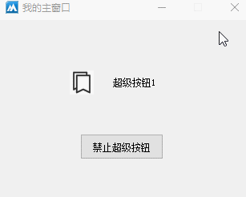
● 通常图片透明色(写)
以上三个写属性的作用是一致的，此处讲解“通常图片透明色”。
帮助文档如下图：
通过本属性可将图片指定颜色的部分进行透明化处理。
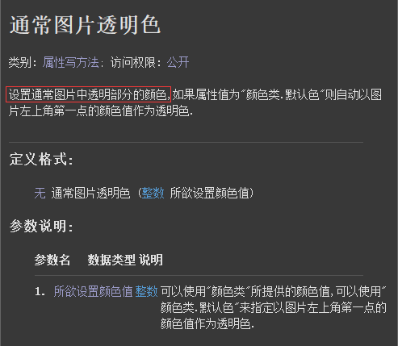
准备一张黑绿两色的图：
代码编写如下图：
在超级按钮的属性栏，设置“通常图片透明色”的属性值为“颜色类.黑色”。
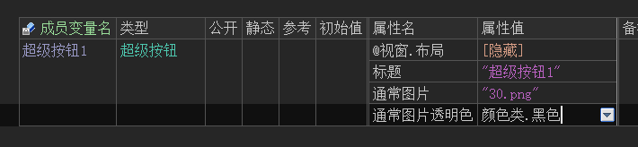
运行效果如下图：
最终软件运行后，黑色部分将透明只保留绿色部分。
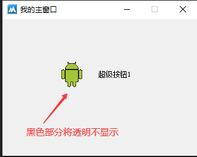
● 通常前景色(写)
说明：
以上三个属性用于设置不同状态下的文本颜色。
通常：鼠标离开组件时显示的颜色。
点燃：鼠标经过组件时显示的颜色。
焦点：组件获得焦点时显示的颜色。
注意：使用以上属性必须将“使用默认色”设置为假。
代码编写如下图：
设置两个超级按钮，分别设置上相同的颜色值。
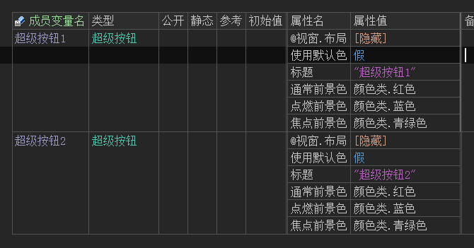
运行效果如下图：
当按tab键切换组件焦点时，文本颜色将会变成“青绿色”。
当鼠标经过组件时，会变成“蓝色”，离开时会变成“红色”。
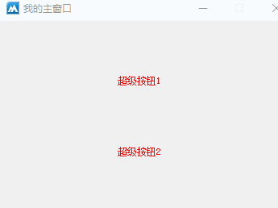
● 焦点背景色(写)
说明：
以上三个属性用于设置不同状态下的背景颜色。
通常：鼠标离开组件时显示的颜色。
点燃：鼠标经过组件时显示的颜色。
焦点：组件获得焦点时显示的颜色。
注意：使用以上属性必须将“使用默认色”设置为假。
代码编写如下图：
添加两个超级按钮并设置颜色。
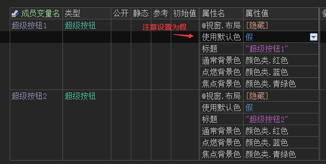
运行效果如下图：
当按tab键切换组件焦点时，背景颜色将会变成“青绿色”。
当鼠标经过组件时，会变成“蓝色”，离开时会变成“红色”。
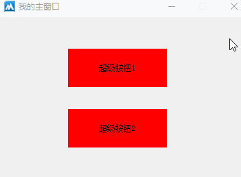
● 提示文本(写)
帮助文档如下图：
当鼠标在超级按钮上停留时会提示本属性设置的文本内容。
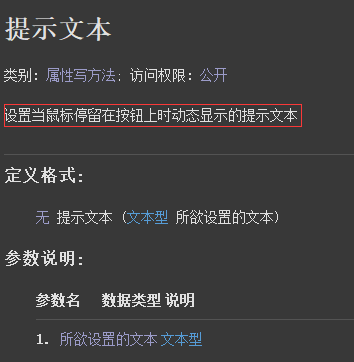
代码编写如下图：
添加两个超级按钮并设置本属性内容。
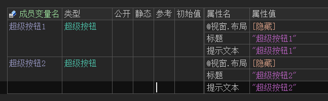
运行效果如下图：
可看到当鼠标在超级按钮上停留时，会显示文本。
注意：如果没有提示文本，可以尝试点击一下按钮进行鼠标停留。
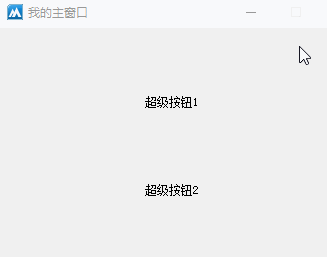